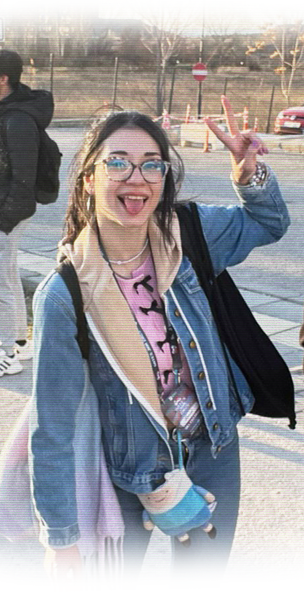

ABOUT
Hi there, I'm Hazal!
I graduated in July 2025 from METU Architecture, where I focused my studies upon the theory & design of non-conventional spatial experiences, specifically in digital, liminal and XR contexts.
After graduation, I worked as an art generalist as part of Wise Monke Entertainment Studio, a pre-incubation indie team of four people in METU Technopolis, working on titles "Mate'Morphosis" and "Thus Spoke The Donke".
Currently, I'm studying in "EMJM DIGICREA - Digital Arts & Creativity" with an Erasmus Mundus scholarship, where we are training in the theory and technical side of audio-visual media.
My passion lies upon environmental storytelling and branching narrative designs, and I wish to continue exploring the intersection of video-games and cinematic storytelling.
Thank you, and hope you enjoy!